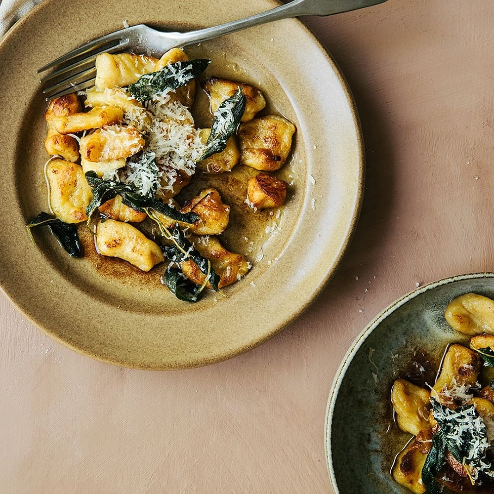

Ny pasta!
Hemmagjord gnocchi med brynt smör och salvia

Ingredienser
Gnocchi
- 900 g potatis (gärna amandine, colomba eller melody)
- 2 ägg
- 1 tsk salt
- 3 - 4 dl vetemjöl (+ extra till utbakning)
- 2 msk smör (till stekning)
- 2 msk olja (till stekning)
- svartpeppar
Brynt smör med salvia
Till servering
Gör så här
-
Gnocchi: Skala och koka potatisen mjuk i saltat vatten. Häll
av och låt svalna lite. Pressa genom potatispress i en bunke.
-
Blanda den pressade potatisen med ägg och salt till ett mos. Arbeta
in mjölet, lite i taget, till en smidig deg. Degen ska vara ganska
lös men kan formas med hjälp av mjölade händer.
-
Rulla degen till 2 eller 3 cm tjocka rullar på mjölad bänk. Skär i 3
cm stora bitar. Tryck till lätt med gaffel och lägg på mjölat
underlag.
-
Koka upp rikligt med saltat vatten i en stor kastrull. Koka gnocchin
i omgångar ca 5 minuter, de är klara när de flyter upp till ytan. Ta
upp med hålslev och låt rinna av på hushållspapper.
-
Brynt smör: Plocka bladen från salvian. Bryn smöret tills det
doftar nötigt. Ta från värmen och rör ner salvian.
-
Gnocchi: Stek gnocchin i smör och olja i en stor stekpanna
tills den är gyllene. Smaka av med salt och peppar.
-
Till servering: Lägg upp gnocchin på tallrikar och toppa med
salviasmöret och riven parmesanost.